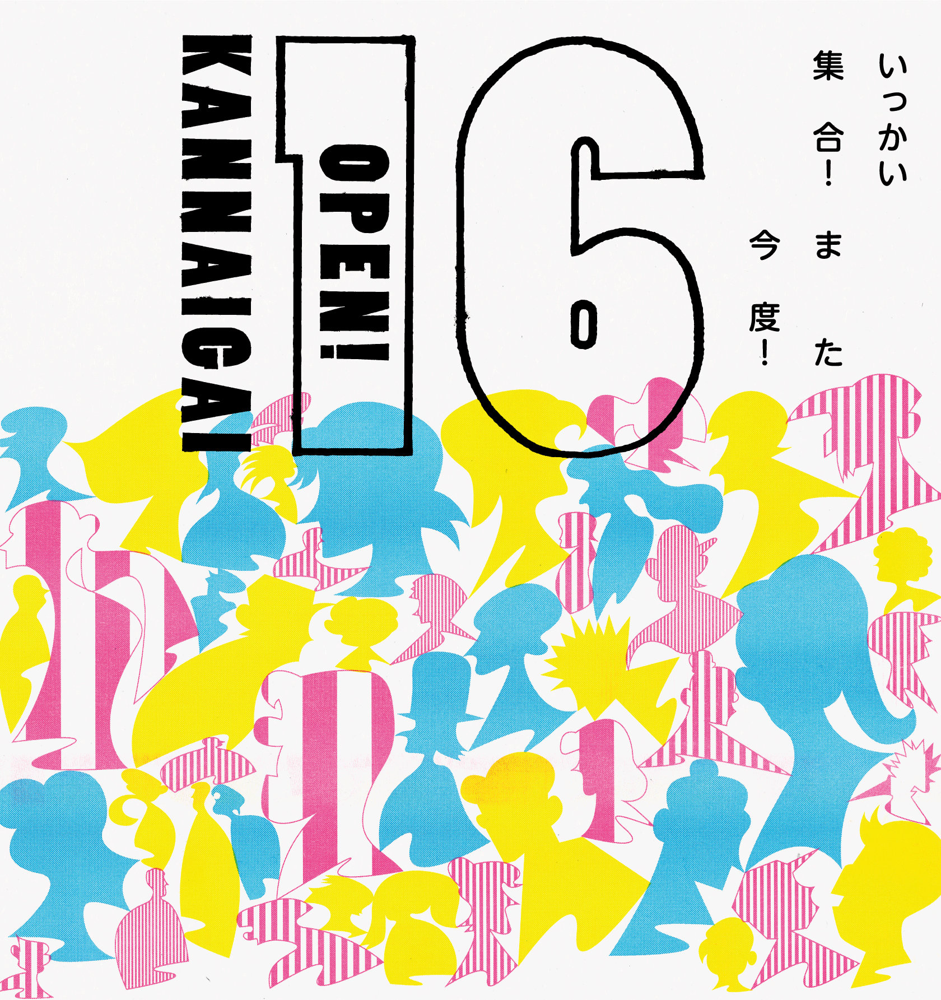

関内外OPEN!は2009年にはじまった、横浜・関内外エリアのネットワークから生まれるイベントです。開催16回目のテーマは《いっかい集合！また今度！》。
「オオ、久しぶり！元気にしてる？」そんな声が行き交う日常の文化をもっと楽しみたい。11月3日を、どこにでも、誰にでも、横断してみる日に。クリエイターが“まち”への様々な挨拶のカタチを表現し、道を彩ります。
関内桜通り周辺に、いっかい集合！
関内外OPEN!16≪いっかい集合！また今度！≫
●日時：2024年11月3日(日) 11:00〜16:00 ※雨天決行、荒天中止
●場所：関内外周辺エリア（メイン会場 関内桜通り）
デザイナーや建築家、アーティスト等、国内外問わず活躍するクリエイターが多く拠点を構える横浜。第一線で活躍する関内外クリエイターの仕事は、地域経済・観光・環境・福祉・教育等さまざま分野にわたり、私たちの生活につながっています。クリエイターが普段どんなことをやっていて、社会とどう関わっているのか。あまり知られていないクリエイターの活動を身近に感じることができます。
各プログラムの詳細は、Peatixページをご覧ください。 なお、「OPEN STUDIO TOUR!」は事前申込制です。定員に達し次第、受付終了となりますのでご了承ください。
＊新型コロナウイルス感染症や台風等の影響によりイベントの一部が中止になる場合がございます。
お問合せ
関内外 OPEN!16事務局
Mail kannaigai.info@gmail.com
主催：関内外OPEN!16事務局（関内外クリエイターズ／アーツコミッション・ヨコハマ（公益財団法人横浜市芸術文化振興財団））
共催：横浜市にぎわいスポーツ文化局
協力：関内桜通り振興会、京浜急行電鉄株式会社、横浜高速鉄道株式会社、株式会社泰有社、オンデザインパートナーズ株式会社、株式会社横浜アーチスト、N&R FOLDINGS JAPAN、株式会社ボイズ（順不同）
令和6年度 文化庁 文化芸術創造拠点形成事業